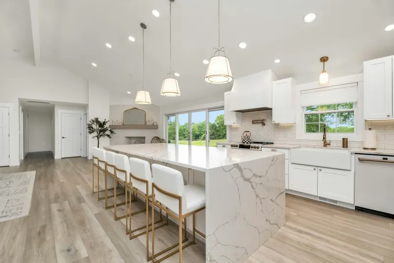
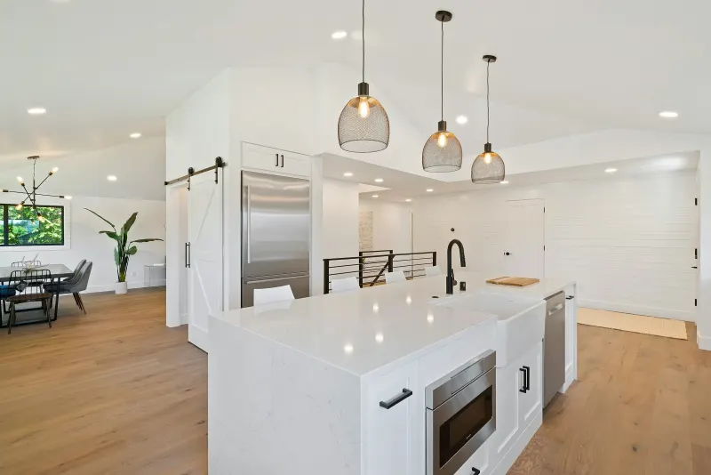
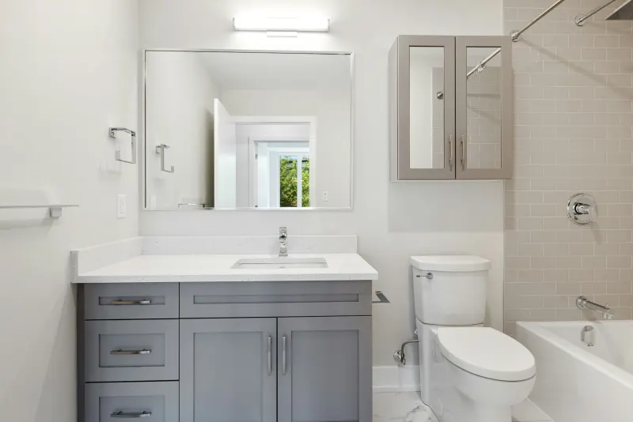
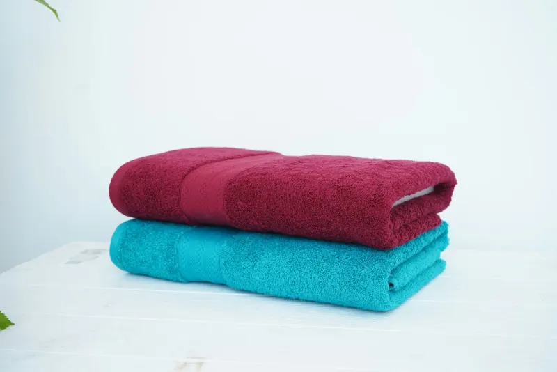
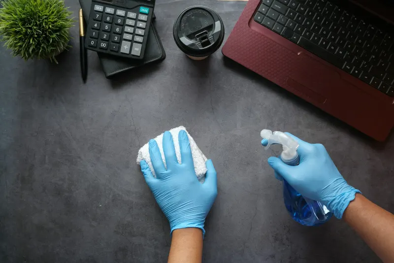
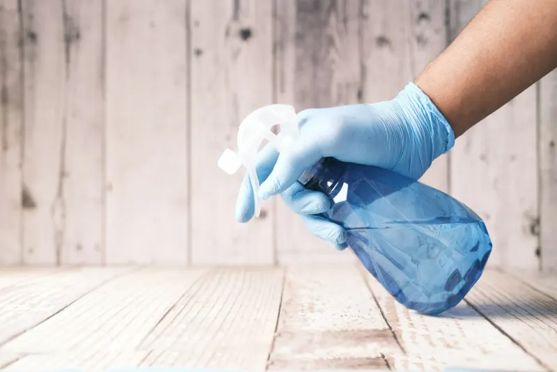
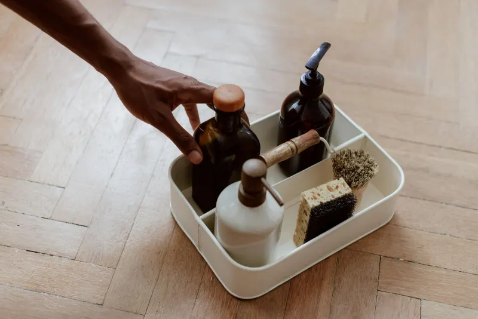
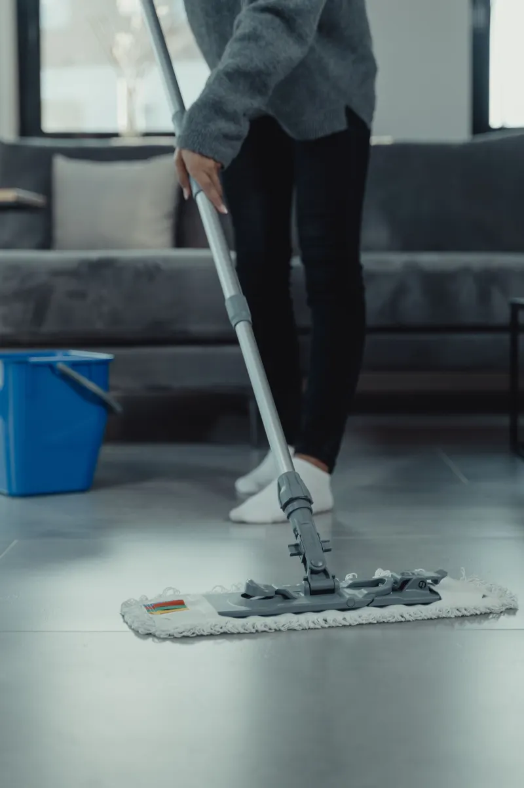
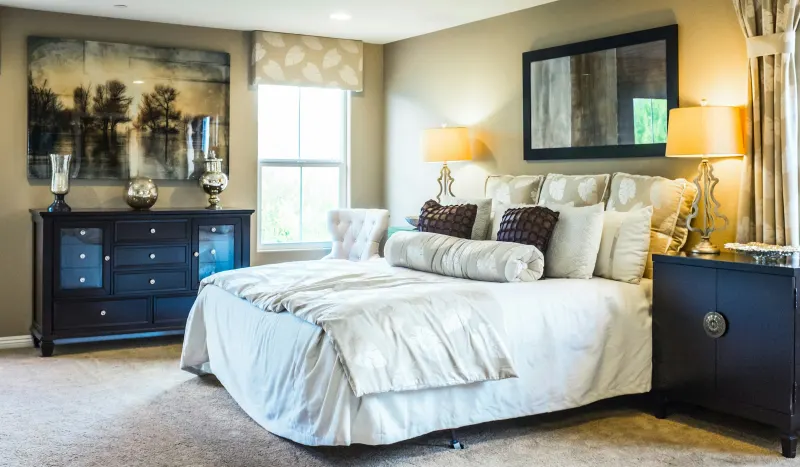
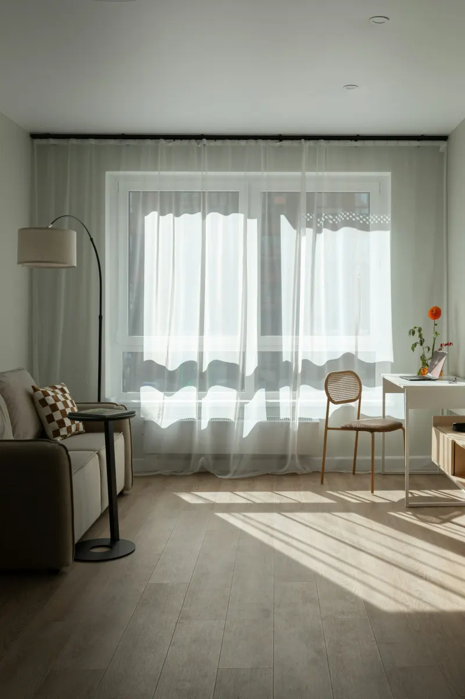

Photo credits
Every photo in this preview is royalty-free stock from Unsplash or Pexels. None shows a real client's home, work or team. Both licenses allow free commercial use; we credit the photographers anyway.
-

Bright white kitchen with a long marble island, bar stools and pendant lights
Photo by Zac Gudakov on Unsplash · Unsplash License
-

White kitchen with hexagon tile backsplash, a stainless steel range and a marble island
Photo by roam in color on Unsplash · Unsplash License
-

Open white kitchen with a marble island, black pendant lights and wood floors
Photo by Im3rd Media on Unsplash · Unsplash License
-

White kitchen with gold cabinet pulls, an island sink and a sunny dining area beyond
Photo by Bailey Alexander on Unsplash · Unsplash License
-

Modern bathroom with a glass shower, soaking tub and double vanity
Photo by Lotus Design N Print on Unsplash · Unsplash License
-

Clean bathroom with a gray vanity, large mirror, toilet and tub
Photo by Point3D Commercial Imaging Ltd. on Unsplash · Unsplash License
-

Folded green and white towels on a windowsill beside small potted succulents
Photo by Sven Mieke on Unsplash · Unsplash License
-

Two neatly folded bath towels stacked on a white table
Photo by Rinku Shemar on Unsplash · Unsplash License
-

Gloved hands wiping a desk with a cloth and spray bottle
Photo by Towfiqu barbhuiya on Unsplash · Unsplash License
-

Gloved hand holding a blue spray bottle over a wooden surface
Photo by Towfiqu barbhuiya on Unsplash · Unsplash License
-

Hand reaching for a caddy of unlabeled cleaning bottles, a brush and a sponge
Photo by Ron Lach on Pexels · Pexels License
-

Person mopping a tile floor in a living room, with a blue bucket nearby
Photo by Tima Miroshnichenko on Pexels · Pexels License
-

Neatly made bed with white bedding, lamps on both sides and a dark wood dresser
Photo by Quilia on Unsplash · Unsplash License
-

Sunlight pouring through sheer white curtains into a calm, tidy room
Photo by Aleksandra Dementeva on Unsplash · Unsplash License